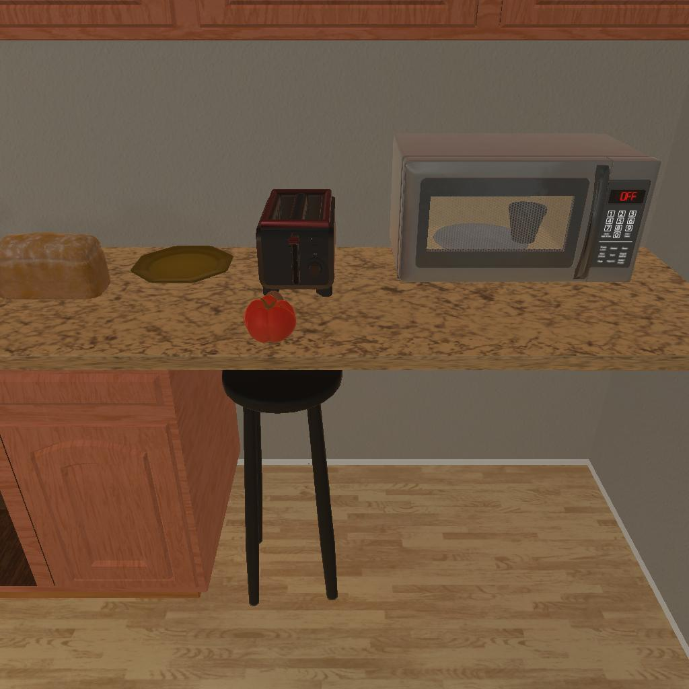

---------------------------------------------------------task: 15---------------------------------------------------------
--------------------------------------------------------------------------------------------------------------------------------------------------------------------
--------------------------------------------------------------------------------------------------------------------------------------------------------------------
Step:--------------------------------------------------------------------------13-------------------------------------------------------------------------------
----------------------------------------
VLM Prompt:
**Task**
Please perform as an embodied AI agent. Our final objective is to cool some mug and put it in coffeemachine. Below is the plan for completing the task, the current observation, alongside historical data and admissible actions for the next step. Please determine the best action for the next step!
**Plan**
Below is a detailed step-by-step plan to complete the task.
1. Find a mug.
2. Pick up the mug.
3. Locate a fridge.
4. Cool the mug with the fridge.
5. Find a coffee machine.
6. Place the cooled mug in the coffee machine.
**Current Observation**
Displayed is an image capturing the current position of the agent.
Objects in The Image: ['bread', 'plate', 'toaster', 'apple', 'stool', 'microwave', 'kitchen cabinet']
**History Information**
Displayed are the previous observations with their corresponding actions.
State 0:
No history.
State 1:
1. Step Index in the Plan: 1
2. Objects: Kitchen Sink, Faucet, Countertop, Window, Wall, Espresso Machine
3. Action: go to cabinet 1
State 2:
1. Step Index in the Plan: 1
2. Objects: Door
3. Action: go to cabinet 2
State 3:
1. Step Index in the Plan: 1
2. Objects: Wooden Cabinet Doors
3. Action: go to cabinet 3
State 4:
1. Step Index in the Plan: 1
2. Objects: Door, Wall, Ceiling, Ceiling Molding, Wall Corner
3. Action: open cabinet 3
State 5:
1. Step Index in the Plan: 1
2. Objects: Open Cabinet, Empty Shelf
3. Action: go to cabinet 4
State 6:
1. Step Index in the Plan: 1
2. Objects: Refrigerator, Countertop, Cabinets
3. Action: go to cabinet 5
State 7:
1. Step Index in the Plan: 1
2. Objects: Countertop, Salt Shaker, Pepper Shaker, Loaf of Bread, Lettuce
3. Action: go to cabinet 6
State 8:
1. Step Index in the Plan: 1
2. Objects: Cabinet, Countertop, Bread Loaves, Salt Shaker, Pepper Shaker, Lettuce
3. Action: open cabinet 6
State 9:
1. Step Index in the Plan: 1
2. Objects: Countertop, Bread Loaf, Salt Shaker, Pepper Shaker, Lettuce
3. Action: go to cabinet 7
State 10:
1. Step Index in the Plan: 1
2. Objects: Wooden Cabinet, Chair Backrest, Countertop
3. Action: open cabinet 7
State 11:
1. Step Index in the Plan: Unknown
2. Objects: Countertop, Cabinet, Chair Back, Wall
3. Action: go to cabinet 8
State 12:
1. Step Index in the Plan: Ongoing since beginning
2. Objects: Wooden Cabinet Doors
3. Action: open cabinet 8
State 13:
1. Step Index in the Plan: Ongoing (finding a mug)
2. Objects: Wall, Cabinet (number unspecified)
3. Action: go to cabinet 9
**Admissible Actions**
(1): go to cabinet 1
(2): go to cabinet 2
(3): go to cabinet 3
(4): go to fridge 1
(5): go to countertop 1
(6): go to cabinet 4
(7): go to cabinet 5
(8): go to cabinet 6
(9): go to cabinet 7
(10): go to drawer 1
(11): go to drawer 2
(12): go to drawer 3
(13): go to cabinet 10
(14): go to drawer 4
(15): go to microwave 1
(16): go to cabinet 11
(17): go to toaster 1
(18): go to cabinet 12
(19): go to cabinet 13
(20): go to cabinet 14
(21): go to cabinet 15
(22): go to countertop 2
(23): go to coffeemachine 1
(24): go to garbagecan 1
(25): go to countertop 3
(26): go to countertop 4
(27): go to sink 1
(28): go to stoveburner 1
(29): go to stoveburner 2
(30): go to stoveburner 3
(31): go to sinkbasin 1
(32): open cabinet 9
(33): close cabinet 9
**Analysis Guideline**
1. Analyze the history and current observation, and then determine our current step in the plan and our current place.
2. List all visible objects related to the task in the current observation, without summarizing any as "various items."
3. Analyze the objects in the current observation based on the history and the requirements for the current step, and then determine if we can complete the step with the current observation.
4. Analyze and decide on the most appropriate action to take.
5. Summarize the analysis using the following format: "Analysis: [The summarization of the analysis], The Most Appropriate Action: (i which is the integer.): [Selected action]"
**Notes**
1. We must complete each step of the plan in order and cannot skip steps when the previous ones are not finished.
2. For "Go to" actions listed as "go to xxx [n]", interpret this as there are n distinct actions available: "go to xxx 1", "go to xxx 2", ..., "go to xxx n". Select one specific action from these options instead of using "go to xxx [n]".
3. If receptacles such as drawers, cabinets, and so forth are closed in the current observation, we may try to open them.
4. Pay attention to synonyms and ensure clarity in the terms used.
5. We must determine and provide the single action which must be in the **Admissible Actions**.
6. If there is no history available, we are at the first step and the current place is "Unknown".
**Answer**
Please select the most suitable action by following the **Analysis Guideline**, keeping the above **Notes** in mind.
----------------------------------------
----------------------------------------
VLM Response:
Analysis: The current step in the plan is to find a mug, which has been ongoing since the beginning. The current place seems to be a kitchen with various cabinets and appliances. Visible objects related to the task in the current observation include a bread loaf, a plate, a toaster, an apple, a stool, and a microwave; however, there is no mug visible. Based on the history, we have already attempted to open multiple cabinets (up to cabinet 8) in search of a mug, without success. The image does not show any new cabinets to open, and the objects listed do not include a mug. Therefore, we need to continue searching for a mug by opening more cabinets. The most appropriate next action seems to be to open the next cabinet in sequence, which would be cabinet 9.
The Most Appropriate Action: (32): open cabinet 9
----------------------------------------
----------------------------------------
>>> Refine VLM Response and Get Pure Action: open cabinet 9
----------------------------------------
-----------------------------------------------------------------
Running time: 16.223588228225708 seconds
Total Money: 0
-----------------------------------------------------------------
-----------------------------------------------------------------
Summarization Prompt:
**Context**
Analysis: Since there is no history information, we are at the first step in the plan, which is to find a statue. The current place is unknown. In the current observation, we see a floorlamp next to an armchair with a small table that has a small object on it, which could potentially be the statue we are looking for. Since the plan requires us to find a statue first and it appears there might be one on the table next to the armchair, we should investigate this object to determine if it is the statue we need.
The Most Appropriate Action: (1): go to armchair 1
**Summary**
1. Step Index in the Plan: 1
2. Objects: Floorlamp, Armchair, Small Table, Small Object (potential statue)
3. Action: go to armchair 1
**Context**
Analysis: The current step in the plan is to find a mug, which has been ongoing since the beginning. The current place seems to be a kitchen with various cabinets and appliances. Visible objects related to the task in the current observation include a bread loaf, a plate, a toaster, an apple, a stool, and a microwave; however, there is no mug visible. Based on the history, we have already attempted to open multiple cabinets (up to cabinet 8) in search of a mug, without success. The image does not show any new cabinets to open, and the objects listed do not include a mug. Therefore, we need to continue searching for a mug by opening more cabinets. The most appropriate next action seems to be to open the next cabinet in sequence, which would be cabinet 9.
The Most Appropriate Action: (32): open cabinet 9
Please summarize the context by following above examples when providing the summary, and ensure that only the summary is included, without any extra explanation.
**Summary**
-----------------------------------------------------------------
-----------------------------------------------------------------
Summarization Response:
1. Step Index in the Plan: Ongoing from the beginning
2. Objects: Bread Loaf, Plate, Toaster, Apple, Stool, Microwave (no mug visible)
3. Action: open cabinet 9
-----------------------------------------------------------------
-----------------------------------------------------------------
Text Observation:You open the cabinet 9. The cabinet 9 is open. In it, you see a bread 2, a plate 1, a tomato 1, and a egg 1.
-----------------------------------------------------------------
UNSUCCEED